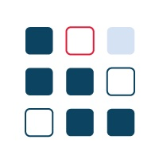
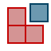

Delphine Coille
Objectifs du Bonita Camp
Quoi ? Comprendre les concepts liés à la création d'applications basées sur l'automatisation des processus et les mettre en application.
Qui ? Equipe projet et développeurs débutants avec Bonita
Comment ? Cours théorique et pratique basé sur un exemple concret avec Bonita
Programme
Jour 1 - Tout pour créer une première application
- La solution Bonita et les composants de Bonita
- Démarrer un projet Bonita
- Modélisation de processus
- Gestion des données
- Les formulaires de processus
- Gestion des utilisateurs
- Connecteurs
- Applications
Programme
Jour 2 - Pour aller plus loin dans le développement
- L'architecture de la solution Bonita
- Modélisation et automatisation
- Les données - utilisation avancée
- Les extensions
- L'interface utilisateur
- Déploiement
Avant de démarrer
- Assurez-vous d'avoir une JVM (Java 11 recommandée)
- Installer la dernière version du Studio (cf document exercices)
- Télécharger les fichiers du Bonita Camp depuis GitHub : https://github.com/Bonitasoft-Community/bonita-camp/releases
- Nous recommandons d'utiliser ou
 lors de vos développements
lors de vos développements
La solution Bonita
Plateforme open-source et extensible pour l'automatisation et l'optimisation des processus d'entreprise
 de code pour construire une application
de code pour construire une application
 Nombreux modèles pour définir les applications
Nombreux modèles pour définir les applications
 Collaboration facilitée entre les équipes métier et techniques
Collaboration facilitée entre les équipes métier et techniques
 Suivi et optimisation de l'exécution des processus
Suivi et optimisation de l'exécution des processus
Applications basées sur l'automatisation des processus
Combiner différents processus ensemble dans le but de fournir une application métier riche et cohérente
Déployées et restituées dans un navigateur web ou mobile
Composée de nombreux éléments dont :
- Formulaires
- Pages
- Layout
- Thème
Applications personnalisées

Application utilisateur Bonita
Application native de suivi des cas et tâches

Application administrateur Bonita
Application native d'administration et de suivi des processus

Projet d'automatisation de processus Bonita
Eléments de structure d'un projet

Projet d'automatisation de processus Bonita
Architecture 3-Tier

Composants de Bonita
Trois composants principaux :
- Bonita Studio, l'environnement de développement
- Bonita Runtime, l'environnement de production
- Bonita Continuous Delivery
 , l'environnement de déploiement continue des projets Bonita (Editions Souscription)
, l'environnement de déploiement continue des projets Bonita (Editions Souscription)
Studio: environnement de modélisation et collaboration
 |
|
IDE basé sur Eclipse
Nécessite l'utilisation d'une JVM (Embarquée dans Bonita Community)
Basé sur des modèles et wizards pour limiter le code
UI Designer: création de l'interface utilisateurs
 |
|
Bonita Runtime : le chef d'orchestre
Nécessite :
- Serveur d'application Java EE
- Base de données transactionnelle avec JDBC

Applications Bonita : interfaces web de l'utilisateur et de l'administrateur
2 applications par défaut et 2 applications coeur de plateforme embarquées dans Bonita runtime
- Application utilisateur Bonita

- Application administrateur Bonita

- Application super-administrateur Bonita

- Répertoire d'applications 
Application super administrateur
Application native d'administration avancée de la plateforme

Répertoire centralisé d'applications
Une URL unique centralisant toutes les applications accessibles par l'utilisateur

Le cycle d'exécution d'un projet DPA

La première itération

Démarrer le projet dans Bonita Studio
- Un projet Bonita est un projet

- Les projets sont intégrés à un workspace en local ou à distance
- Les projets peuvent être partagés avec SVN ou Git depuis Bonita Studio
Démarrer le projet : vue d'ensemble
Accès à la vue d'ensemble dès la création du projet

Introduction au BPMN
Notation standard pour la modélisation des processus
Les éléments essentiels :
 | Pool : un pool par processus |
 | Événement de début : le démarrage d'un processus |
| Tâche humaine : quand un utilisateur est impliqué | |
 | Tâche automatique/service : exécutée par le moteur |
| Événement de fin : déclenche l'archivage du processus | |
| → | Transition : utilisée pour lier les éléments entre eux |
Les portes logiques
3 types de portes logiques :
 | Exclusive |  |
 | Parallèle | |
 | Inclusive |
- Les conditions sont définies sur les transitions sortantes. Pas de conditions pour les portes parallèles
- Une bonne pratique consiste à utiliser les portes de manière symétrique pour améliorer la lisibilité

Exercice 1
Modélisation basique de processus
Si vous ne l'avez pas déjà fait, téléchargez les instructions et les corrections à partir de GitHub
https://github.com/Bonitasoft-Community/bonita-camp/releases
Les types de données
Données de processus
- Paramètres
- Documents
- Variables
Données métier
- Spécifiques au processus ou
- Partagé entre tous les processus à travers du modèle de données métier (BDM)
Modéliser les données : le modèle de données métier (BDM)
- Stocke les données métier en lien avec les processus et/ou les applications
- Le modèle définit des objets pour stocker les données métier
- Le modèle est défini dans le Studio
- Depuis le modèle Bonita génère des classes Java (POJO) et crée les tables en base de données
- La persistance est gérée par le moteur
Utilisation du modèle de données métier (BDM)
- Déclarer des variables métier dans la définition du processus
- Create/Read/Update/Delete en utilisant : valeur par défaut, opérations, connecteurs...
- Peuvent être partagés entre différentes instance de processus
- Cycle de vie contrôlé par le développeur
Autre type de données : les documents
- Les références aux documents font partie de la définition de processus
- Lors de l'exécution les documents peuvent être initialisés, mis à jour...
- Contrairement aux BDM, les documents sont associés à une instance de processus donnée
- Les GED (ou CMS) fournissent des systèmes évolués de gestion et stockage des documents
La gestion des données

Modèle MVC pour le découplage entre la logique métier et les interfaces graphiques
- Le modèle est le BDM
- La vue est la combinaison des pages d'applications et des formulaires de processus
- Le contrôleur est un ensemble de processus
La donnée, du processus à l'interface utilisateur
Le cycle de la donnée de l'initialisation à la mise à jour

Les contrats
Ensemble de paramètres d'entrée requis + des règles de validation
Les données envoyées par les formulaires doivent remplir des contrats pour :
- Instancier un processus
- Exécuter une tâche humaine
Exercice 2
Ajout de données et spécification de contrats
L'interface utilisateur: Formulaires
- Associés aux tâches ou au processus
- Initialisés automatiquement dans UI Designer à partir du contrat
- Créés à base de conteneurs et de widgets
- Basés sur AngularJS et Bootstrap
L'interface utilisateur : Formulaires
2 types de formulaires :
- Formulaires éditables qui doivent remplir un contrat
- Instanciation de processus
- Tâches humaines (pas de formulaire sur les tâches de type service)
- Formulaire de synthèse (lecture seule) défini au niveau du Pool
L'interface utilisateur : conteneurs et widgets
Un ensemble de widgets est fourni par défaut (champ texte, menu déroulant, sélecteur de date...)
Des widgets personnalisés peuvent être créés avec l'UI Designer
Réutiliser les contributions partagées par la communauté
Exercice 3
Création de formulaires
Qui peut effecteur une tâche ?
Un ensemble d'utilisateurs.
Protection contre les accès concurrents
- Nécessité que l'utilisateur soit authentifié
- L'utilisateur doit être enregistré dans la base de données Bonita
- Notion de candidats et assigné à une tâche
Support de LDAP, Active Directory, SAML V2, CAS, Kerberos pour le SSO
Qui peut effecteur une tâche ?
2 options disponibles pour définir qui peut faire une tâche :
- Acteurs
- Filtre d'acteurs
Ces acteurs sont associés à l'organisation définie au travers de :
- Groupes
- Rôles
- Utilisateurs
Acteurs
- Déclarer un ou plusieurs acteurs dans la définition du processus (juste un nom)
- À configurer pour associer l'acteur aux utilisateurs :
- Directement à un ensemble d'utilisateurs donné
- Indirectement via des groupes et rôles
- Associer les acteurs directement aux tâches ou via une lane
- Les acteurs ne peuvent pas utiliser des données "live"
Filtre d'acteurs
Remplace complètement l'acteur
Produit une liste d'utilisateurs en fonction d'informations en entrée et d'une logique interne
Exécuté quand l'exécution du processus atteint l'étape associée au filtre d'acteur
Peut être actualisé en utilisant les API
Acteurs vs filtres d'acteur
| Avantages | Limitations | |
|---|---|---|
| Acteur | Toujours à jour par rapport à l'organisation | Association qui ne peut pas se baser sur des données métier |
| Filtre d'acteur | Association qui peut inclure des données métier | Calculé à l'instanciation d'une étape |
Profils
Les profils définissent les accès et la navigation dans les Living applications, aux objets et attributs du BDM
3 profils par défaut dans Bonita :
- Utilisateur
- Administrateur
- Process manager (Uniquement en éditions souscription)
Il est possible de définir des profils personnalisés (Editions souscription uniquement)
Profils : fonctionnement

Exercice 4
Gestion d'acteurs
Les extensions dans Bonita
Permet à un processus d'interagir avec le SI
Le gestionnaire d'extensions de Bonita Studio pour les centraliser

Les connecteurs
Sens opposé à celui des API Bonita
Un catalogue de connecteurs standard est fourni dans le Marketplace du Studio.
Des connecteurs personnalisés peuvent être :
- Développés depuis un IDE Java et mis à disposition
- Importés depuis notre site communautaire
Exercice 5
Notification par le biais d'un connecteur
Interfaces entre les artefacts d'une application
Créer une application : le descripteur d'applications
Définir la structure de l'application depuis Bonita Studio
Déploiement direct pour pouvoir tester